Getting Started
Welcome
Plugin Requirements: Wordpress (4.0+), WooCommerce (2.6+), EasyPost.com Account
Plugin Overview: What you can do with this plugin:
WooCommerce Product Trade-In Plugin allows you to upload items that your visitors will be able to sell to you based on conditional pricing you can set just like any other regular WooCommerce product. Setting an item as a trade-in item is as easy as clicking a checkbox when creating a new item. Then you can set the pricing based on how much you are offering for this particular product. Visitors will be able to browse your trade-in items and if they accept the offer (pricing you have set), they will fill out a simple form which will then lead them to instructions on how to send in their item.
Documentation Overview: What we will be covering in the documentation:
This documentation will walk you through how to upload and activate the WooCommerce Product Trade-In plugin. It will also cover how to set up the proper settings for creating a trade-in product. Tying in your EasyPost.com account to create shipping labels. How to process trade-in orders along with other helpful tips.
Installation
-
Option 1 via FTP
- Extract the .ZIP archive from Codecanyon to a local folder on your PC.
- Upload the extracted WooCommerce Product Trade-In plugin folder along with all its contents to '/wp-content/Plugins' directory using an FTP client.
- Login to your WordPress admin dashboard and click on the Plugins link on the left hand menu.
- Locate the WooCommerce Product Trade-In Plugin and click Activate
-
Option 2 via Plugin Installer
- Login to your WordPress Admin Panel and open the Plugins panel by clicking on plugins on the left hand menu.
- Click Add New and click on it.
- Look for the Upload Plugin button towards the top of the page and click on it.
- Browse for the WooTradeIn.zip file you downloaded locally and upload it.
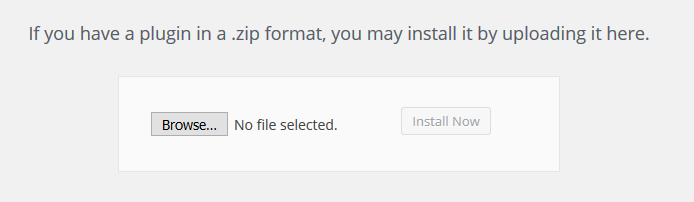
- After successfully uploading the plugin you must now activate it.
Once the plugin has been installed you must check to make sure that two pages have automatically been created.
- A page titled: Trade-In
- If you do not see this page you must add a new page by going into Pages-> Add New. Then in the body please insert the following short code -> [trade-in] -> then publish the page.
- A Page titled: Trade-In Confirmation
- If you do not see this page you must add a new page by going into Pages-> Add New. Then in the body please insert the following short code -> [trade-in-confirmation] -> then publish the page.
Quickstart
Once the Plugin is successfully installed you can begin to create trade-in items with no extra work as you would create any regular WooCommerce Product.
-
Create Product
- In your Wordpress Admin visit Products -> Add New Product.
- Select the checkbox indicating this is a trade-in product.
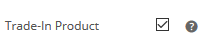
-
Once you publish the new product you should be able to see it on your shop page, similar to the item below for creating an EasyPost.com account.
- The customer can now click the Get Offer button and continue with the process.
Getting started is as simple as that. However if you would like to create automatic shipping labels you must continue with this documentation and instructions below.
EasyPost.com Setup
In order to automatically create shipping labels your customers can print for shipping in their product you must create an EasyPost.com account and activate your API key.
- Visit EasyPost.com to create an account.
- Visit your Dashboardand make note of your API Key. We will use these later to setup the plugin.
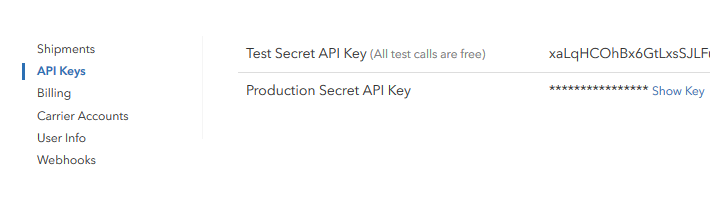
Plugin Settings
Lets take a look at setting up your plugins settings to ensure a successful flow when allowing users to trade-in products.
-
In your WordPress admin panel go ahead and click on WooCommerce Settings in the left hand panel.
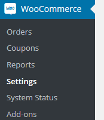
-
Click on the Products Tab at the top of the page. Then go ahead and click on the WooCommerce Trade-In link underneath.
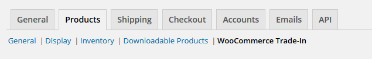
-
You should be presented with a screen like the image below.
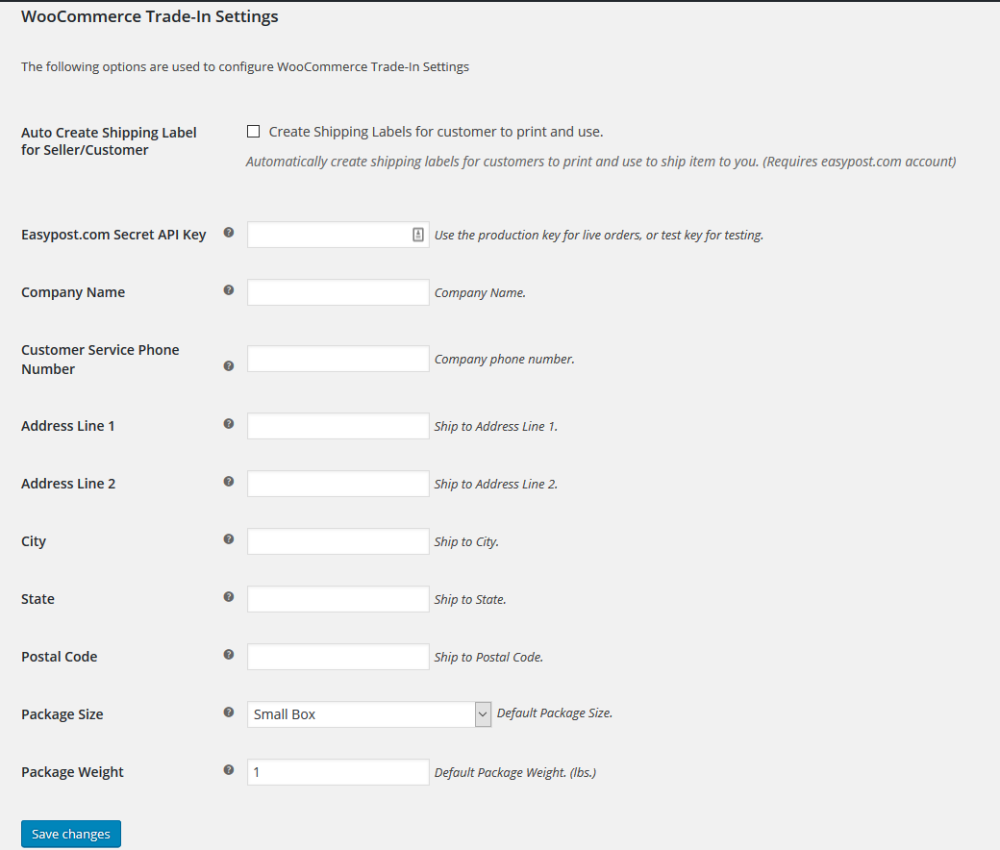
-
Copy your API key from the easypost.com Dashboard we viewed from the step above.
- BE SURE TO BE USING YOUR TEST KEY WHEN TESTING (RECOMMENDED AT FIRST).
- BE SURE TO SWITCH TO YOUR PRODUCTION KEY WHEN YOU ARE READY TO GO LIVE.
-
Please be sure to fill out ALL of the other fields in order to successfully use the plugin.
Products Section
Creating a Product
Creating a product is extremely easy, lets look at how we can create a trade-in item.
- In your Wordpress Admin visit Products -> Add New Product.
- You can then choose a simple or variable Product Type. For the purpose of this demo we will use a variable product type.
- Select the checkbox indicating this is a trade-in product
- If you would like to give different pricing based on conditions or colors or other product variables you must first create attributes. You may use
this tutorial if you are unfamiliar with creating variable attributes for products.
- Below you can see an example of a trade-in item with these attributes: Carrier, Color, Storage, Condition.
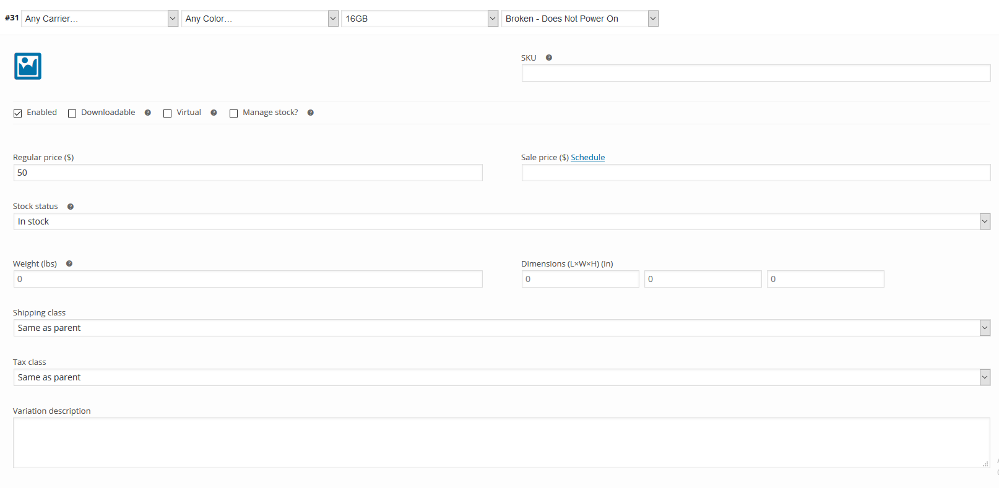
- The pricing you enter is indicating how much you are offering to pay for the item.
- If all settings have been successfully filled out and you have created a trade-in product you should be able to now test out your trade-in item flow and see a shipping label being generated.
Processing Orders
Let's take a look at what happens when a customer puts in an order to trade-in their item.
- Customers should be able to see trade-in items in your shop similar to the image below.
- Once they select all possible options they will see the 'Sell Now'* button.
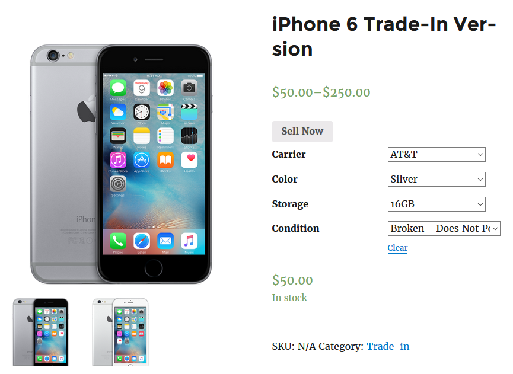
- Next they will be promted to fill out their info along with how they would like to get paid.
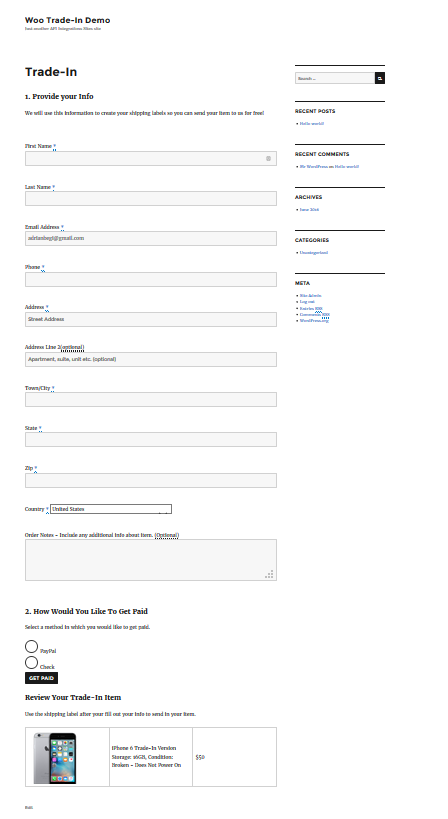
- Once they have successfully filled out all fields they will be presented with their shipping label, which they will need to print and ship the item.
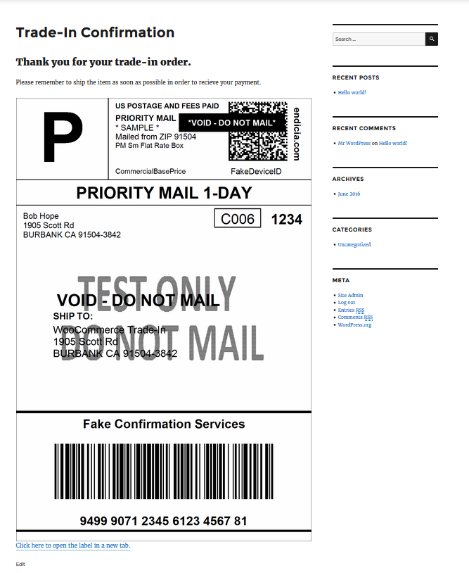
- You will also see the order under WooCommerce -> Orders. The order will have an awaiting shipment icon and a Trade In green check mark indicating this is a trade-in order.
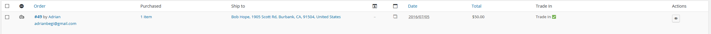
-
Clicking into the order. Under the Custom Fields section you will see the Payment Method chosen by the customer. If PayPal was chosen you will also see their PayPal email address, along with a link to the shipping label that was created.
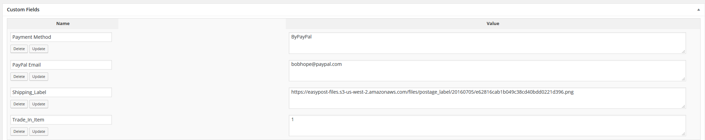
-
You may also view all your shipment/label info by visiting your EasyPost.com dashboard.
Cancelling Shipments
You may choose to offer customers a certain amount of time to ship their products. If you choose to cancel the shipment and be refunded the cost of the label you must visit your dashboard.
- Once you have gone to your EasyPost.com dashboard. Locate the shipment you are wanting to cancel.
- Click the Refund link for that shipment.
- Confirm the Refund.
Tips
- Please visit EasyPost.com for help related to their systems.
- It is suggested to create a seperate Product Category for all trade-in items, although not required.
- If you don't see the correct button text this may be due to your themes styling. *Depending on your support package we may be able to help you with this.
- If you would like to add more payment options please let us know by emailing us. *Depending on your support package we may be able to help you with this.
- For any and all support please email us at support@apiintegrations.com